오늘의 arXiv Top 15
2026-10-22 (목) · cs.CV / cs.LG / cs.RO / cs.CL / cs.AI New submissions 전수 평가
485
신규 논문
131
cs.CV
138
cs.LG
67
cs.RO
88
cs.CL
61
cs.AI
15
정밀 리뷰
분야별 필터
전체 15개 논문 표시 중
1
77점
Reconstruction-Augmented Visuomotor Pre-Training of 3D-Grounded Bimanual Dexterity from RGB-Only Human Videos
Manipulation
relevance 10/10
ICRA·IROS·RA-L 계열 양식 (추정)
Robotics (cs.RO)
RGB만 있는 사람 영상 100만 클립에서 장면 3D 형상과 손 동작을 같은 scale로 맞춰 복원하고, 이 형상을 policy 입력과 예측 목표로 함께 써서 양손 dexterous policy를 사전학습함. 실로봇 양손 과제 6개의 성공률이 가장 강한 baseline π0.5의 43.3%에서 81.7%로 오름.
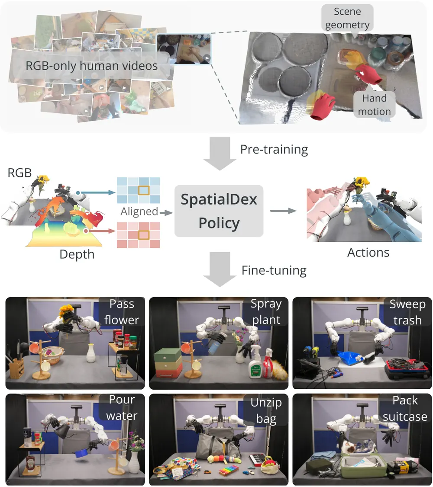
무슨 문제인가
양손 dexterous 조작은 손과 물체의 3D 위치 관계를 알아야 하지만, teleoperation으로 모은 로봇 demonstration은 비싸서 과제와 장면이 좁음. 인터넷의 사람 영상은 양이 많지만 RGB만 있어 장면 형상과 로봇이 쓸 수 있는 행동 label이 없음. 기존 사람 영상 사전학습 VLA는 주로 손목·손가락 동작만 supervision으로 쓰고, 주변 장면은 일부 점이나 keypoint로만 다룸. 단안 복원으로 형상을 얻어도 scale이 정해지지 않아 손 궤적과 장면 거리가 서로 어긋나는 문제가 있음.
어떻게 푸나
SpatialDex는 먼저 영상마다 손 추정기 HaWoR로 MANO 손 mesh와 손목 궤적을 얻고, VGGT-Omega로 장면 depth와 camera pose를 복원함. MANO 손 mesh가 실제 손 크기에 가까우므로, 복원 depth의 손 영역 점을 이 mesh에 맞춰 영상 전체에 하나의 scale과 frame별 rigid 변환을 함께 풂. policy는 PaliGemma VLM에서 시작해 RGB-D 영상, 손목·손가락 상태, 언어 지시를 받고, depth는 patch별 3D 점으로 바꿔 Sonata 점 encoder로 인코딩함. 형상 특징은 VLM 이미지 patch 격자에 맞춰 pooling한 뒤 두 sigmoid gate를 거쳐 RGB 특징에 residual로 더하고, 이 residual 가중치는 학습 초기에 0에서 1로 서서히 올림. 학습 때만 쓰는 형상 예측기가 16 step 뒤 patch별 3D 점을 예측해 Chamfer distance로 손실을 줌(forward dynamics 예측). 출력은 wrist expert가 양 손목 궤적을, finger expert가 그 궤적을 조건으로 손가락 동작을 만드는 두 diffusion transformer이고, 로봇에는 과제당 소수 demonstration과 센서 depth로 fine-tuning함.
결과
- 같은 영상·같은 학습량에서 형상 입력과 미래 형상 목표만 뺀 motion-only 사전학습과 비교함. DexJoCo(MuJoCo 기반 dexterous 조작 benchmark)의 Allegro 손 과제 6개 평균 성공률이 58.9%에서 73.1%로 14.2퍼센트포인트 오름. 사람 영상 사전학습이 없으면 45.6%임.
- 시뮬레이션 9개 과제(DexJoCo 과제 6개와 저자가 만든 Wuji 손 양손 과제 3개)에서 평균 성공률이 π0.5의 59.8%보다 높은 76.3%임. 과제당 demonstration 100개, seed 3개 평균이며, Pick Bucket은 π0.5가 84.0% 대 79.3%로 더 높음.
- 실제 Wuji 손과 Tianji 팔 양손 로봇에서 꽃 건네기, 물 붓기, 가방 지퍼 열기 등 6개 과제를 과제당 demonstration 50개로 학습함. 과제당 10회 시도 합계로 49/60(81.7%)을 성공했고, π0.5는 26/60(43.3%)임.
- 영상 전체 공통 scale 대신 frame별 scale 맞춤을 쓰면 6개 과제 평균이 73.1%에서 63.8%로 내림. forward dynamics 손실만 빼면 65.1%로 내림.
한계
사전학습 supervision의 품질은 손 추정과 단안 복원 정확도에 기대고, 공통 scale 맞춤으로 손 크기·자세·camera 움직임 오차를 다 고칠 수는 없음. 핵심 비교인 motion-only 대조는 형상 입력과 미래 형상 목표를 함께 빼므로 사전학습 단계에서 둘의 몫은 따로 보이지 않음. 배치 때 depth 센서와 새 로봇마다 demonstration이 필요하고, 실로봇 평가는 과제당 10회이며 코드 공개 여부는 원문에서 확인 불가함.
누리랩 연구와의 연결
- 사람 영상에서 3D 장면과 손 동작을 같은 좌표·scale로 맞추는 pipeline은 manipulation용 VLA 사전학습 데이터를 만들 때 바로 쓸 수 있는 방식임. 미래 장면 형상을 보조 목표로 예측하는 부분은 world model을 policy 표현 학습에 넣는 사례로 비교 대상이 됨.
- patch 격자에 3D 점 특징을 gate로 섞는 구조는 object-centric 3D 표현이나 active perception 결과를 기존 VLM 기반 policy에 넣을 때 참고할 수 있음.
2
76점
Real2Sem2Real: 3D Semantic Augmentations for Robot Learning from a Single Human RGB Demonstration
Manipulation
relevance 9/10
ICRA·IROS·RA-L 계열 양식 (추정)
Robotics (cs.RO)
사람이 머그를 커피 머신에 올리는 RGB 영상 1개로, 처음 보는 머그와 머신 조합까지 담은 로봇 demonstration 2,000개를 시뮬레이션에서 만듦. xArm7 머그 올리기 성공률이 같은 영상에서 같은 물체만 쓴 데이터의 36%에서 90%로 오름.
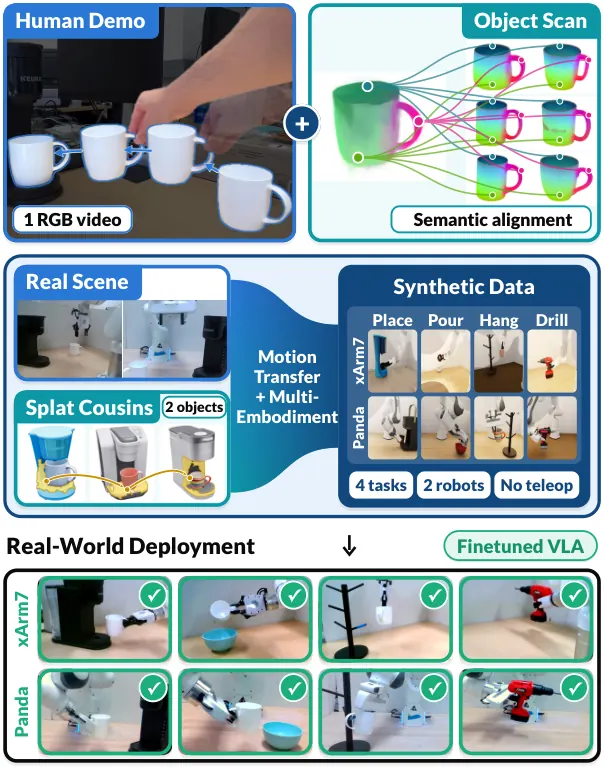
무슨 문제인가
사람 영상은 로봇 없이 쉽게 모을 수 있지만, 기존 방법은 depth 센서가 필요하거나 2D 영상 위에 로봇을 덧그려서 물체를 옮길 수 없음. RGB 영상 1개로 VLA를 학습시킨 Real2Render2Real(R2R2R)도 시연에 나온 그 물체의 위치만 바꿔서 데이터를 늘림. 그래서 다른 머그나 다른 커피 머신을 다루려면 조합마다 스캔과 시연을 새로 해야 함. 비슷한 물체로 바꿔 끼우는 digital cousin 방식도 있지만, 전체 모양이 비슷하다는 것만으로는 새 머신의 어디에 머그를 놓아야 하는지 정해지지 않음.
어떻게 푸나
R2Sem2R(Real2Sem2Real)의 입력은 사람 시연 RGB 영상 1개, 시연 물체의 휴대폰 스캔, 대체 물체(cousin)의 사진 몇 장이고 출력은 로봇 demonstration 수천 개임. 먼저 스캔을 DINOv3 feature가 입혀진 Gaussian splat으로 만들고, 영상의 각 frame에서 RGB·feature·silhouette·monocular depth 순위 loss를 줄이도록 물체의 SE(3) pose를 최적화함. 사람 손은 HaMeR(RGB 영상에서 손의 3D 자세를 복원하는 모델)로 복원해 엄지와 검지 끝을 기준으로 parallel-jaw gripper 파지로 옮기고, 충돌이 없는 파지를 고름. cousin은 사진에서 SAM3D 계열 모델로 생성한 뒤, DINOv3 feature가 같은 부위끼리만 짝을 짓는 ICP로 시연 물체에 맞춤. 이어서 머신의 트레이나 머그 테두리처럼 과제에 중요한 부위의 점에 20배 가중치를 주고 다시 맞춰서, 시연의 물체 간 관계가 cousin 조합에서도 유지되게 함. 정렬된 궤적과 파지로 inverse kinematics를 풀고 IsaacSim이나 MuJoCo에서 episode를 렌더링함.
결과
- xArm7 머그 올리기(머그 7개·머신 7개로 평가하고, 그중 각 3개는 teleoperation 데이터에 없는 물체임)에서 50회 중 45회 성공해 90%임. 같은 영상과 같은 pipeline으로 시연 물체만 쓴 2,000 episode(R2R2R+)는 36%, 여러 물체에서 모은 teleoperation 150개는 62%임.
- 과제 4개(올리기, 붓기, 걸기, 드릴 세우기)와 로봇 2대(xArm7, Franka Panda) 모두에서 R2R2R+보다 26~54퍼센트포인트 높음. teleoperation과는 같거나 높고, 드릴 세우기는 두 로봇 모두 teleoperation과 같은 값(xArm7 85%, Franka Panda 65%)임.
- 같은 2,000 episode를 IsaacSim 대신 MuJoCo로 만들면 xArm7 올리기 성공률이 90%에서 62%로 내려감. RGB만 보는 policy에는 접촉 물리보다 화면 사실감이 더 중요했다고 저자는 해석함.
- 물체 tracking은 7개 물체 평균 mask IoU가 0.913임. 추정 depth를 영상마다 보정해 준 FoundationPose는 0.823, WARPED는 0.681임.
한계
영상 1개만 쓰는 것은 아님: 시연 물체의 스캔과 실제 크기, cousin의 사진과 높이가 필요함. 단단한 물체만 다루고, IsaacSim 재생은 손가락과 물체의 접촉을 계산하지 않아서 접촉이 많은 과제에는 맞지 않음. 실로봇 평가는 과제 4개에 과제당 50회(드릴 40회)이고, 본문에 코드 공개 주소는 없음.
누리랩 연구와의 연결
- 사람 영상 1개에서 object-centric 3DGS로 pose를 추적하고 DINOv3 feature로 부위를 맞추는 구조라서, VLA manipulation 데이터 생성과 object-centric 3DGS 연구에 그대로 가져다 쓸 수 있음.
- 과제에 중요한 부위만 가중해서 맞추는 정렬은, 물체가 바뀌었을 때 어느 부위 관계가 어긋나 실패했는지 따지는 failure diagnosis의 기준으로도 쓸 수 있음.
3
74점
T-WLA: Bridging Slow Vision and Fast Touch with a World-Language-Action Model
VLA
relevance 10/10
Robotics (cs.RO)
느린 시각 policy가 만든 action chunk를, 시각 branch를 다시 돌리지 않고 촉각 입력으로 실행 도중에 고치는 구조를 제안함. 실제 dexterous hand 과제 4개의 평균 성공률이 시각과 촉각을 서로 다른 주기로 처리하는 기존 policy T-Rex의 23.0%에서 51.0%로 오름.
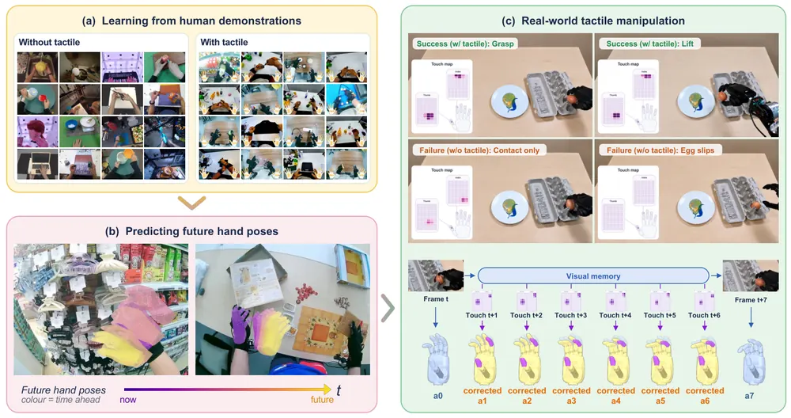
무슨 문제인가
물체를 잡거나 끌어당기는 조작에서는 접촉 상태가 시각 policy의 다음 갱신보다 빨리 바뀜. 대부분의 VLA는 시각과 언어만 입력으로 받으므로, 이미지로 잘 안 보이는 미끄러짐이나 힘 변화에 늦게 반응함. 접촉이 바뀔 때마다 시각 policy를 다시 돌리면 지연이 생김. 반대로 촉각 신호만으로는 과제 맥락을 모르므로 진행 중인 동작을 어떻게 고칠지 정하기 어려움.
어떻게 푸나
T-WLA(Tactile World-Language-Action)는 느린 시각 branch와 빠른 촉각 editor를 하나의 visual memory로 잇는 구조임. 시각 branch는 현재 RGB 이미지, 언어 지시, 손 상태와, 지난 8번의 시각 갱신에서 저장한 visual memory를 학습된 query로 요약한 값을 vision-language model에 넣어 새 visual memory를 만듦. action expert는 이 visual memory를 조건으로 flow matching으로 8단계 base action chunk를 만들고, 이 둘은 다음 시각 갱신까지 고정함. 그 사이 촉각이 들어올 때마다 작은 Transformer가 visual memory, base chunk, 경과 시간으로 action feature를 만들고, 촉각 feature가 FiLM(곱하고 더할 값을 촉각에서 계산하는 조절)으로 이를 조절함. 출력은 아직 보내지 않은 action에 더할 residual 보정값이며, 보정은 이전 보정 위가 아니라 원래 base chunk에 더함. 먼저 사람 손 데이터로 미래 손 자세를 예측하도록 학습하고(미래 이미지·압력 보조 head는 학습 때만 붙임), 로봇에는 과제당 teleoperation 30개로 맞춤.
결과
- EgoTouch(egocentric 영상과 손 촉각을 함께 기록한 데이터셋, 5개 환경)에서 100ms 뒤 손 자세를 예측함. 손목 기준 손가락 관절 오차(MPJPE)가 가장 강한 baseline의 0.50cm에서 0.35cm로 내림. Tachin(촉각 장갑 데이터셋)에서는 가장 강한 baseline(VITRA + tactile)의 0.63cm에서 0.46cm로 내림.
- 같은 H100 GPU에서 계산만 잰 촉각 보정 빈도는 T-WLA가 119.1Hz, 가장 빠른 baseline(SmolVLA + tactile)이 69.0Hz임.
- 양팔 Linker A7 로봇과 Linker Hand L6 손으로 과제 4개(달걀 옮기기, 종이 한 장 집기, 종이컵 포개기, 종이봉투 끌기)를 과제당 시연 30개로 학습함. 평균 성공률은 T-WLA 51.0%, T-Rex 23.0%, SmolVLA + tactile 17.0%임. 과제당 시도 횟수는 본문에서 확인 불가함.
- 같은 구조에서 촉각만 뺀 T-WLA는 평균 44.25%임. 촉각 editor가 더한 몫은 6.75퍼센트포인트이고, 촉각 없이도 T-Rex보다 21.25퍼센트포인트 높음.
한계
실로봇 성공률 향상의 대부분은 촉각보다 시각 branch와 memory에서 나오므로, 촉각 보정 효과는 과제별 4~9퍼센트포인트 수준임. 미래 이미지·압력 예측을 빼도 손 자세 예측 오차가 평균 1.0%만 오르므로 world model 성격의 보조 학습이 하는 일은 작음. 실제 하드웨어 지연 측정은 팔을 움직이지 않는 조건이었고, 실제 하드웨어의 보정 출력은 14.5Hz였으며 매 보정마다 새 촉각이 들어오는지는 확인되지 않음.
누리랩 연구와의 연결
- 실행 중인 action chunk를 다시 계획하지 않고 빠른 센서로 고치는 residual editor 구조는, VLA 실행 중 failure detection과 즉시 recovery를 붙이는 설계의 비교 대상이 됨.
- 지난 visual memory를 query로 꺼내 쓰는 방식이 촉각 없이도 성공률을 크게 올린 결과는 robot memory 연구의 근거로 쓸 수 있음.
4
74점
Plan First, Act Later: Streaming Reasoning for Executable Memory in Robot Control
Robot Memory
relevance 10/10
ICLR 양식 (추정)
Robotics (cs.RO)
고수준 VLM이 영상 증거가 보이는 순간 나중에 할 subtask를 미리 목록에 적어 두고, 실행할 때는 그 목록에서 꺼내 VLA에 넘기게 함. 기억이 필요한 조작 과제 모음 RoboMME의 평균 성공률을 가장 강한 baseline의 44.51%에서 56.05%로 올림.
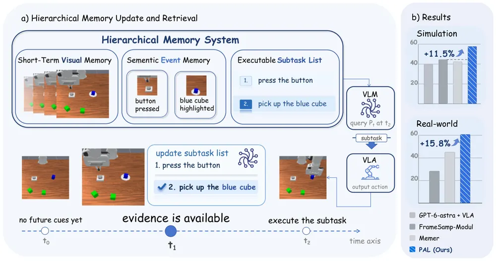
무슨 문제인가
VLA는 대개 현재 관측이나 최근 몇 frame만 보고 행동을 정하므로, 앞서 잠깐 보였다 사라진 정보가 필요한 과제에서 실패함. 이를 보완하려고 과거 관측을 memory bank에 쌓아 두는 방법(MemER 등)이 나왔음. 그러나 이 방법들은 실행 시점마다 고수준 모델이 큰 memory bank를 뒤져 다음 subtask를 추론해야 함. bank에는 겹치는 정보가 많아 필요한 정보를 찾기 어렵고, 저장된 이력이 길어질수록 계산도 늘어남.
어떻게 푸나
PAL(Plan first, Act Later)은 최근 RGB frame을 담는 visual buffer, 사건을 문장으로 적는 semantic-event memory, 실행할 subtask 문장을 차례로 담는 subtask list를 둠. 매 query마다 고수준 VLM(Qwen3-VL-4B)은 지난 memory, 새 image chunk, 과제 지시문을 받아 새 event, 목록에 덧붙일 새 subtask, 지금 실행할 subtask를 하나씩 내며, 증거가 부족하면 앞의 두 칸은 비워 둠. memory가 갱신되면 visual buffer를 비우고, subtask가 추가되면 event memory도 비워서 문맥이 길어지지 않게 함. 선택된 subtask 문장은 저수준 VLA(MemER와 같은 사전학습 VLA)가 받아 행동으로 바꿈. 학습은 두 단계로, Stage 1은 한 시점에만 달린 갱신 label을 앞뒤 query로 늘려 증거가 부족한 앞쪽에는 '갱신 없음', 뒤쪽에는 정답 갱신을 붙임. Stage 2는 Stage 1 모델을 학습 데이터에서 직접 돌려, 틀리거나 되풀이한 갱신을 지우고 필요한 갱신을 제때 다 한 rollout만 남겨 다시 fine-tuning함(self-labeling).
결과
- RoboMME(기억이 필요한 시뮬레이션 조작 과제 16개 모음)의 평균 성공률이 PAL 56.05%, FrameSamp-Modul 44.51%, MemER 42.38%, GPT-6-astra를 고수준 모델로 쓴 경우 39.75%임. FrameSamp-Modul은 과거 frame의 시각 feature로 action expert를 조절하는 방법임. 16개 과제 중 PAL이 가장 높은 과제는 4개뿐임.
- 긴 조건 영상을 보고 목록을 만드는 Long-video 묶음에서 성공률이 FrameSamp-Modul의 46.00%에서 81.60%로 오름. 처음부터 정보가 다 주어지는 Episode-start 묶음에서는 같은 VLA를 쓰는 MemER의 65.11%보다 12.22퍼센트포인트 높은 77.33%임.
- 학습 단계 ablation에서 평균 성공률은 Stage 1만 쓰면 37.35%, 한 시점 label만 쓰면 43.39%, 두 단계를 다 쓰면 56.05%임. 과제 4개에서 Stage 1만 쓴 모델은 정답보다 34~44% 더 자주 목록을 고치고, 최종 목록 정확도는 18~30%임. PAL은 갱신 빈도가 정답과 6.4% 이내로 맞고 최종 목록 정확도는 54~84%임.
- 실제 Franka Research 3 로봇 과제 4개에서 과제당 30회 평가한 전체 성공률이 PAL 60.83%, MemER 45.00%, FrameSamp-Modul 28.33%임. 박스를 정해진 횟수만큼 집는 PickXtimes에서 MemER는 0%, PAL은 53.33%임.
한계
subtask list가 순서만 있는 목록이라 실행 중 관측에 따라 갈라지는 조건 분기를 담지 못함. RoboMME의 MemER, FrameSamp-Modul 수치는 RoboMME 논문 보고값을 그대로 가져온 것이라 PAL과 평가 횟수가 같지 않음. 학습에 사건·subtask 정답 label이 필요하고, 저자는 문맥이 줄어든다고 주장하지만 지연 시간이나 계산량은 재지 않음.
누리랩 연구와의 연결
- 관측을 사건 문장과 실행할 subtask 목록으로 바꿔 두는 robot memory 구조로, VLA의 long-horizon 기억 연구에서 비교 대상으로 쓸 수 있음.
- 모델 자신의 rollout에서 정답과 맞는 갱신만 남겨 다시 학습하는 Stage 2 방식은, 고수준 VLM의 failure detection이나 진행 상태 판단을 학습할 때 데이터 분포를 맞추는 방법으로 참고할 만함.
5
72점
GeoMem-VLA: Internalizing 3D Scene Understanding into Temporal Memory for Vision-Language-Action Models
VLA
relevance 10/10
ICLR 양식 (추정)
Computer Vision and Pattern Recognition (cs.CV)
VLA에 3D 기하를 학습한 별도 token을 두고, 그 token을 episode 안의 memory로 저장해 꺼내 쓰게 함. RoboTwin 2.0 양팔 과제 50개에서 기하 branch를 뺀 같은 모델보다 평균 성공률이 89.71%에서 91.17%로 오름.
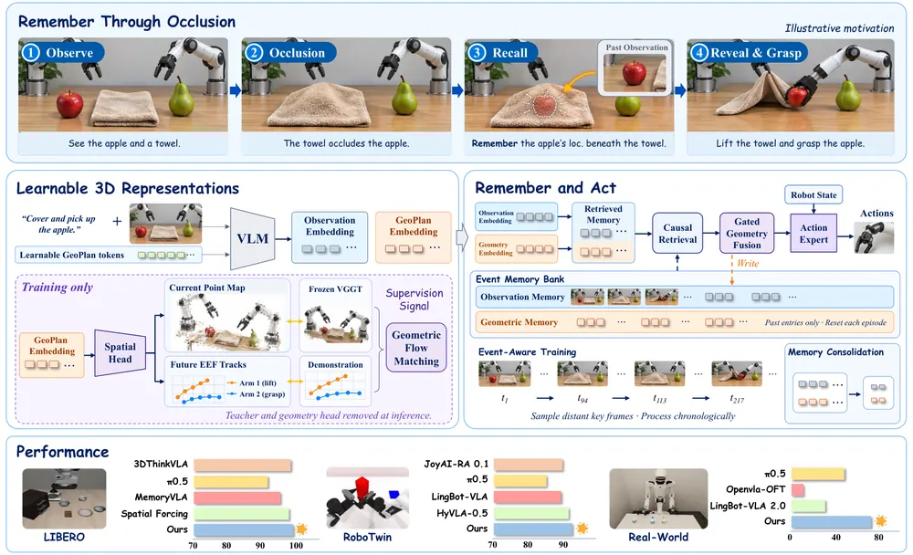
무슨 문제인가
대부분의 VLA는 현재 프레임의 2D 관측만 보고 행동을 정함. 3D를 쓰는 VLA도 매 시점 관측에서 기하를 따로 추정하고 다음 시점에는 버림. 그래서 수건으로 사과를 덮은 뒤 다시 찾는 과제처럼 지금 화면에 안 보이는 공간 정보가 필요한 경우를 다루기 어려움. 저자들은 행동 생성에 필요한 것은 매 시점의 완전한 3D 복원이 아니라, 시간에 따라 갱신되는 작은 기하 요약이라고 주장함.
어떻게 푸나
GeoMem-VLA는 Qwen3-VL-4B를 backbone으로 쓰고 GR00T 방식의 flow-matching action expert로 행동 chunk를 출력함. 입력은 여러 시점 RGB 영상, 로봇 상태, 언어 지시이고, 여기에 학습 가능한 GeoPlan token(기하 정보를 담도록 학습하는 추가 token) K개를 덧붙임. 학습 때는 보조 head가 GeoPlan token을 조건으로, 고정된 VGGT(RGB에서 3D point map을 추정하는 모델)의 현재 point map과 미래 end-effector 궤적을 예측함. GeoPlan token과 관측 token은 시점별로 별도 memory bank에 저장되고, 매 step 현재 token이 같은 episode의 과거 항목을 attention으로 검색해 gate로 관측 token에 섞음. bank 용량이 차면 이웃한 항목 쌍 가운데 가장 비슷한 쌍을 평균으로 합쳐, 장면이 바뀐 시점의 항목이 남도록 함. 추론 때는 VGGT와 복원 head를 떼어 내므로 3D 복원 없이 행동을 냄.
결과
- RoboTwin 2.0(양팔 조작 과제 50개, Clean과 장면을 무작위로 바꾼 Randomized 두 설정)에서 과제당 100회 평가함. 두 설정 평균 성공률이 전체 모델 91.17%, 기하 branch 제거 89.71%, memory 제거 90.18%, 바탕 모델인 StarVLA-GR00T 88.25%임.
- LIBERO(시뮬레이션 조작 과제 10개씩 묶은 suite 4개)에서 4개 suite 평균 성공률이 98.9%임. 표에 실린 최고 기존 방법인 3DThinkVLA 98.7%, Spatial Forcing 98.5%와 차이가 작음. 긴 과제 묶음(Long)에서는 memory를 빼면 96.6%에서 94.2%로 내림.
- 실로봇 양팔 플랫폼 2종(Astribot S1, AgileX)에서 과제 5개를 과제당 60개 demonstration으로 학습하고 10회씩 평가함. 평균 성공률은 78.0%이고, 수건에 가려진 사과 찾기 80%, 정해진 횟수만큼 큐브 옮기기 50%임. 비교한 π0.5, LingBot-VLA 2.0, OpenVLA-OFT의 과제별 수치는 본문 텍스트에서 정확히 확인 불가함.
한계
LIBERO와 RoboTwin의 기존 방법 비교는 각 논문이 보고한 값을 옮긴 것이라 학습 데이터와 평가 조건이 다름. 통제된 비교인 ablation에서 차이는 1~1.5퍼센트포인트 수준이고, 기하 branch 제거는 supervision·token·memory bank·gate를 한꺼번에 빼므로 어느 요소가 효과를 내는지 가를 수 없음. 실로봇 평가는 과제당 10회뿐이며, 추론 시간이나 memory 비용은 측정하지 않았고 코드는 출판 후 공개 예정임.
누리랩 연구와의 연결
- 3D 기하를 latent token으로 요약해 episode memory에 저장하는 설계는 robot memory 연구에서 MemoryVLA(과거 관측을 memory bank에 쌓아 검색하는 VLA), Spatial Forcing과 함께 비교 대상이 됨.
- 가림이 생기는 과제(수건 아래 사과)와 횟수 세기 과제는 memory가 필요한 실패 사례를 만들 때 참고할 수 있음. 다만 failure detection이나 recovery를 직접 다루지는 않음.
6
72점
CW-WAM: A Structured Contact-Wrench World Action Model for Force-Sensitive Manipulation
World Model
relevance 10/10
ICRA·IROS·RA-L 계열 양식 (추정)
Robotics (cs.RO)
video와 action을 함께 예측하는 world action model에 손목 힘·토크 센서 값을 입력과 출력으로 넣어, 동작과 그때 받을 접촉력을 짝지어 예측하게 함. 면당 틈이 1mm인 사각 peg 끼우기 성공률이 힘 정보 없는 모델의 25%에서 70%로 오름.
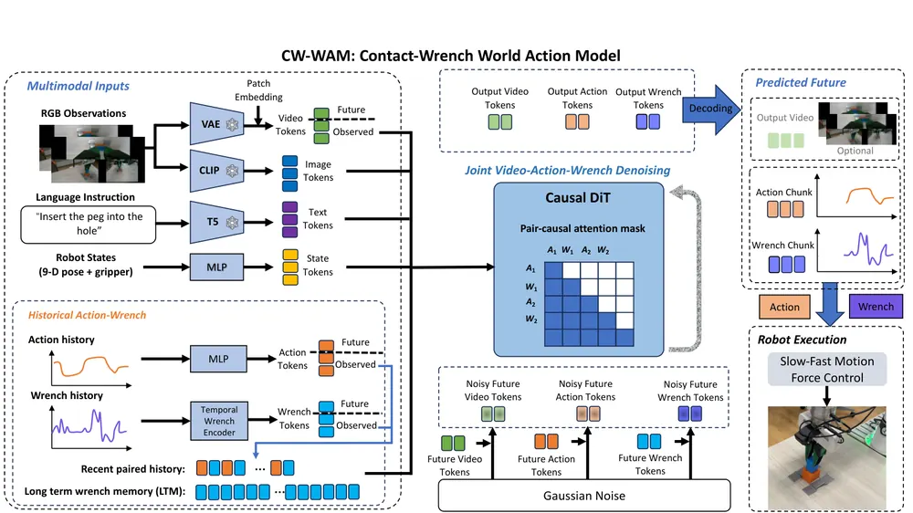
무슨 문제인가
WAM(world action model)은 앞으로의 영상과 action을 함께 예측해 조작 동작을 만드는 모델임. 하지만 영상에는 접촉력이 보이지 않음. 구멍에 걸린 peg가 다 들어간 것처럼 보이거나, 겉모습이 같은 상자의 무게가 크게 다를 수 있음. 손목 F/T(force-torque) 센서가 이 정보를 주지만, 기존 WAM은 wrench(3축 힘과 3축 토크를 묶은 값)를 다루지 않음.
어떻게 푸나
CW-WAM은 DreamZero(영상과 action을 함께 생성하는 기존 WAM) 계열 video-action backbone(Wan2.2 5B DiT)에 상호작용 모듈을 붙임. 입력은 카메라 3대의 RGB, 언어 지시, 로봇 상태, 과거 이력임. 과거 이력은 최근 1.6초 동안의 동작 명령과 같은 구간에서 잰 wrench를 짝지은 token과, 10초 길이의 wrench 전용 기억(LTM, long-term wrench memory)으로 이루어짐. 출력은 앞으로 1.6초 동안의 동작 24개와 각 동작 시점의 예상 wrench 24개이며, 둘은 token·prediction head·loss를 따로 씀. pair-causal attention은 미래의 각 wrench가 짝이 되는 동작과 앞선 짝들만 보게 하고, 동작은 같은 짝의 wrench를 보지 못하게 함. 실행할 때는 예측 wrench를 기준값으로 측정 wrench와의 차이로 자세를 고치는 admittance 제어를 20Hz로 돌려, 0.5~0.6초 걸리는 모델 추론 사이에도 힘 feedback이 이어짐.
결과
- 실제 Franka 로봇에서 과제마다 20회 시도함. 사각 peg 끼우기(38mm peg를 40mm 구멍에 약 50mm 깊이로 넣기) 성공이 힘 정보 없는 WAM의 5회에서 CW-WAM의 14회로 늘어남. 전원 어댑터 끼우기는 8회에서 19회로 늘어남.
- wrench 이력을 한 덩어리로 넣고 action과 wrench를 이어 붙여 예측한 WAM + Wrench와 비교함. peg 끼우기는 8회 대 14회, 어댑터 끼우기는 9회 대 19회임. LTM을 빼면 peg 성공이 14회에서 7회로 내려감.
- 겉모습이 같은 30g·830g 상자를 용수철 저울로 들어 옮기는 과제에서 CW-WAM의 최고 높이 중앙값은 가벼운 상자 423.6mm, 무거운 상자 481.8mm임. 시연 중앙값은 420.9mm와 492.7mm임. WAM은 464.4mm와 447.3mm로 무거운 상자를 더 높이 들지 않음.
- 예측 wrench로 admittance 제어를 더하면 기준 힘과 측정 힘의 RMSE가 peg 끼우기에서 4.8N에서 2.7N으로, 칠판 닦기에서 2.0N에서 1.3N으로 내려감. 성공률은 그대로임.
한계
실험은 과제 4개이고 물체는 시연 때와 비슷한 위치에만 놓았으며, admittance 이득과 힘을 받아들일 방향은 과제마다 손으로 정함. 어댑터 끼우기에서는 성공률이 오른 대신 기준 힘 RMSE가 WAM + Wrench의 2.53N보다 큰 8.37N이었음. 힘을 예측하는 다른 WAM인 FAWAM과 직접 비교하지 않았고, 코드 공개 여부는 본문에서 확인 불가임.
누리랩 연구와의 연결
- world model이 영상과 action 외에 접촉력까지 예측하게 한 사례임. 예측 wrench와 측정 wrench의 차이는 끼임 같은 접촉 실패를 실행 중에 감지하는 failure detection 신호로 바로 쓸 수 있음.
- 느린 VLA·WAM 추론 사이를 빠른 힘 feedback으로 메우는 구조는 contact-rich manipulation에서 test-time 보정을 설계할 때 참고할 만함.
7
72점
Training in Deployment: Human-in-the-loop Online Post-Training for Robot Manipulation
VLA
relevance 10/10
ICRA·IROS·RA-L 계열 양식 (추정)
Robotics (cs.RO)
실로봇 배포 중에 사람이 개입한 action과 policy가 직접 실행한 action을 출처 label로 구분해 그 자리에서 policy를 계속 학습시키는 시스템 TIDE를 만듦. critic이나 reward model 없이 양팔 조작 과제 4개의 완주 횟수가 20회 중 4~6회에서 13~17회로 오름.
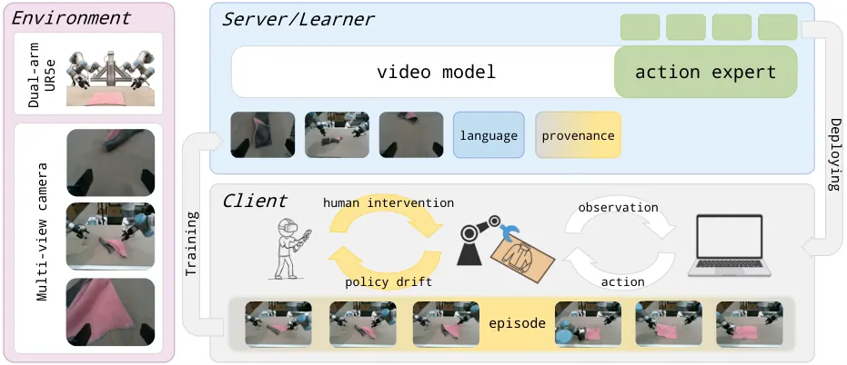
무슨 문제인가
사전학습된 robot foundation model을 offline teleoperation demonstration으로 목표 과제에 맞추면, 배포 중 policy가 스스로 만든 접촉·복구·정밀 상태를 demonstration이 덮지 못함. human-in-the-loop 방법은 사람이 개입한 구간만 demonstration으로 쓰고 policy가 실행한 구간은 버리는 경우가 많음. 또 수집 후 다시 offline으로 학습하는 주기를 따르므로 배포 경험이 바로 반영되지 않음. online RL은 policy 실행 데이터도 쓰지만 성공·실패 같은 희소한 결과로 value function을 학습해야 해서 긴 action chunk를 안정적으로 평가하기 어려움.
어떻게 푸나
TIDE(Training In DEployment)는 로봇 client, 추론·기록 server, online learner를 한 배포 세션 안에서 비동기로 묶음. policy는 video generation backbone과 flow-matching action expert로 된 30억 parameter world-action 모델로, 관측과 지시를 받아 50 step 양팔 action chunk와 미래 영상을 함께 예측함. 로봇이 policy action을 실행하다 필요할 때 사람이 VR로 개입하고, 시스템은 각 step의 action이 사람과 policy 중 누구에게서 나왔는지(provenance)를 기록함. 50 step 전체가 한 출처인 chunk만 사람 또는 policy label을 받고, 두 출처가 섞인 chunk는 학습에서 뺌. 각 label을 학습 가능한 embedding으로 바꿔 backbone과 action expert에 조건으로 넣고, offline 데이터와 함께 flow-matching loss로 text encoder와 video VAE를 뺀 모든 모듈을 갱신함. 새 checkpoint는 5개 episode마다 나오며 episode 경계에서만 교체되고, 평가 때는 사람 출처 조건으로 고정해 실행함.
결과
- 양팔 UR5e 과제 4개(나사 비트 꽂기, 수건 접기, 수건 걸기, 쇠사슬 상자에 담기)에서 사람 개입 없이 과제당 20회 평가함. 단계별 완료 비율로 잰 task progress가 warm-start(offline demonstration으로만 맞춘 시작 policy)와 추가 offline demonstration 기준선은 21.7~55%였고 TIDE는 78.3~88.3%였음. 완주 횟수는 두 기준선이 20회 중 4~6회임.
- 같은 시간 동안 policy를 고정한 채 데이터를 모은 뒤 같은 예산으로 학습한 Fixed Policy와는 최종 성능이 비슷함. 완주 횟수는 TIDE가 16, 13, 17, 16회, Fixed Policy가 16, 12, 16, 14회임. 차이는 TIDE의 checkpoint가 배포 세션 도중에 갱신된다는 점이며, 과제당 배포 시작부터 마지막 checkpoint까지 1시간 미만이 걸림.
- 나사 비트 꽂기에서 task progress가 TIDE 80.0%, 출처 조건을 뺀 경우 65.0%, 사람 개입 chunk만 쓴 경우 67.5%임. 이 ablation은 과제 1개에서만 했음.
한계
사람 감독자가 늘 있어야 하고, 사람이 성공으로 확인한 episode만 학습에 넣어 선택 편향이 생길 수 있음. 실험은 로봇 플랫폼 1개, 과제 4개, backbone 1개뿐이며 반복 세션 간 편차나 통계 검정은 없음. 배포가 진행될수록 사람 개입 비율이 줄었다는 관찰도 나사 비트 꽂기 한 세션의 결과이고 학습 효과와 시간 요인을 분리하지 않았음.
누리랩 연구와의 연결
- 배포 중 실패 상황에서 사람이 개입한 데이터를 바로 policy 개선에 쓰는 구조라서, failure detection과 recovery 연구에서 사람 개입 대신 자동 실패 감지기를 넣는 확장의 출발점이 됨.
- value function 없이 action 출처만 조건으로 주는 방식은 VLA를 실로봇에서 online으로 post-training할 때 RL 대신 비교할 baseline으로 쓸 수 있음.
8
72점
Doob-Based Generative Policy Optimization
RL
relevance 8/10
NeurIPS 2026 채택
Machine Learning (cs.LG)
diffusion·flow policy의 action likelihood를 계산하지 않고도 PPO·GRPO 갱신 규칙으로 RL 학습을 할 수 있게 함. MuJoCo HalfCheetah의 flow policy 평균 return을 기존 방법 ReinFlow의 1,344에서 6,368로 올림.
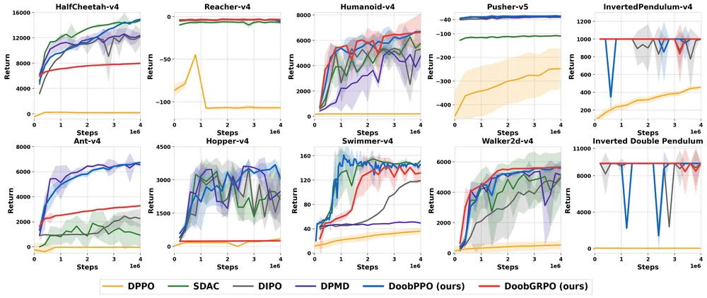
무슨 문제인가
diffusion·flow policy는 여러 갈래로 나뉘는 행동 분포를 표현할 수 있어 로봇 policy로 많이 쓰임. 행동 하나가 denoising이나 velocity 적분 전체를 거쳐 나오므로, 그 행동의 확률(likelihood)을 정확히 계산하기 어려움. PPO·GRPO(GRPO: 표본 묶음 안에서 보상을 정규화하는 PPO 변형)는 새 policy와 이전 policy의 확률 비(probability ratio)로 갱신 폭을 조절하므로 이 policy에 그대로 쓸 수 없음. 기존 우회 방법들은 추정 편향, 큰 계산량, 특정 policy 종류나 갱신 규칙에만 맞는다는 제약이 있다고 저자는 정리함.
어떻게 푸나
DoobPO(Doob Policy Optimization)는 policy를 어느 쪽으로 바꿀지 정하는 단계와 생성 모델을 그쪽으로 학습시키는 단계를 나눔. 첫 단계에서 작은 MLP인 ratio model이 상태와 행동을 받아, 그 행동의 확률을 이전 policy보다 몇 배로 할지 양수로 출력함. ratio model은 이전 policy로 모은 데이터에서 PPO나 GRPO 목적식의 확률 비 자리에 들어가 학습되고, 이전 policy 아래 기댓값이 1이 되도록 정규화됨. 두 번째 단계의 목표는 이전 policy를 이 ratio로 다시 가중한 분포이고, Doob h-transform(끝점 분포를 바꿀 때 확률 과정의 drift를 어떻게 고칠지 주는 정리)으로 필요한 drift 보정을 정의함. 이 보정은 직접 계산할 수 없으므로, 이전 policy 샘플에 ratio를 가중치로 곱한 denoising 회귀 loss(conditional drift matching)로 score network를 학습함. flow policy도 ratio를 곱한 velocity 회귀로 같은 방식으로 학습하며, 출력은 갱신된 score 또는 velocity network임.
결과
- MuJoCo 10개 과제(시뮬레이션 보행·조작·균형 제어)에서 flow policy를 처음부터 5M step 학습함. seed 3개 평균 return이 HalfCheetah에서 가장 강한 baseline ReinFlow의 1,344에서 DoobGRPO의 6,368로 오르고, Walker2d에서 503에서 4,215로 오름. 10개 중 9개 과제(동점 포함)에서 평균이 가장 높음.
- 같은 10개 과제에서 diffusion policy를 4M step 학습하면 diffusion RL 방법 중 8개 과제(동점 포함)에서 평균이 가장 높음. HalfCheetah는 DoobPPO 14,921 대 SDAC 14,731로 차이가 작고, Ant·Hopper는 DACER가 앞섬(7,137 대 6,738, 3,774 대 3,681).
- Robomimic(로봇 팔 조작 시뮬레이션 benchmark)의 Can·Square 과제를 성공 여부만 reward로 주고 같은 behavior cloning policy에서 fine-tuning함. 성공률은 DoobPPO와 DPPO(diffusion policy를 PPO로 fine-tuning하는 기존 방법)가 거의 같음: Can 99.46% 대 99.23%, Square 99.78% 대 99.59%.
한계
실험은 모두 저차원 상태 입력 시뮬레이션이고 이미지 입력이나 실로봇 실험은 없음. Gaussian policy인 SAC가 Walker2d에서 6,882로 diffusion policy DoobPPO의 5,642보다 높아, MuJoCo에서는 생성 policy를 쓰는 이득 자체가 분명하지 않음. 이론 보장은 diffusion policy이고 ratio model이 정확히 학습된다는 가정에서만 성립함. flow 쪽 loss는 근사이며, ratio 추정 오차의 영향은 저자도 미해결로 남김.
누리랩 연구와의 연결
- π0 같은 flow 기반 VLA를 likelihood 계산 없이 PPO·GRPO로 RL fine-tuning하는 경로임. VLA를 rollout 결과로 고치는 연구에서 ReinFlow·DPPO와 함께 비교 대상이 됨.
- 바꿀 방향을 별도의 ratio model로 표현하므로, failure detection 결과로 실패 행동의 ratio를 낮춰 policy를 고치는 recovery 실험에 그대로 붙일 수 있음.
9
72점
ALPS: Visual State Encoders for World Models
World Model
relevance 8/10
Computer Vision and Pattern Recognition (cs.CV)
world model과 robot policy가 공유할 frozen 시각 encoder ALPS를 정지 이미지와 텍스트만으로 학습함. 한 벌의 patch token이 물체 상태, 언어 정렬, 픽셀 복원을 함께 지원하고, LIBERO 물체 상태 probe의 상대 오차(Stage 1 = 1.000)는 ViT-B 중 가장 낮은 0.829로, 3.5배 큰 V-JEPA 2-L과 같음.
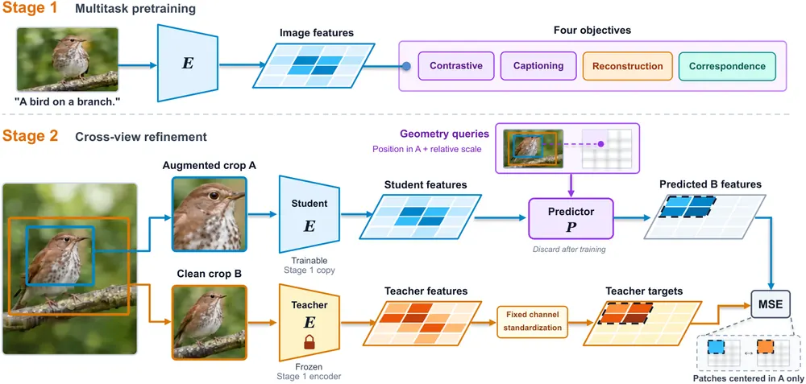
무슨 문제인가
많은 world model은 frozen 시각 encoder의 token 위에서 미래를 예측하고 계획함. 그래서 token에 물체 위치와 상태가 담겨 있어야 적은 상호작용 데이터로 dynamics를 배울 수 있음. 지시문을 장면과 연결하려면 언어 정렬이, 상상한 미래를 사람이 확인하려면 픽셀 복원이 필요함. 기존 encoder는 DINO 계열처럼 공간 정보, CLIP 계열처럼 언어 정렬, MAE처럼 복원 중 한두 가지에만 강하고, 이미지-텍스트 encoder의 상태 정보를 보강하면 언어 정렬 성능이 낮아지는 문제가 있음.
어떻게 푸나
ALPS(A Language-aligned, Pixel-renderable State encoder)는 ViT-B/16을 두 단계로 처음부터 학습함. 입력은 이미지 한 장이고 출력은 196개의 patch token이며, 언어 쪽은 token을 평균 pooling한 뒤 선형 투영해 함께 학습한 text encoder와 맞춤. Stage 1은 DataComp-1B 이미지-캡션 쌍으로 학습하며, 같은 patch token에 contrastive 정렬, 캡션 생성, 픽셀 복원, patch 대응(dense correspondence)을 함께 적용함. Stage 2는 Stage 1 encoder를 고정 teacher와 학습할 student로 복사함. student는 변형된 crop을 보고, predictor가 crop 위치와 상대 scale을 담은 geometry query를 받아 깨끗한 crop의 teacher token을 MSE로 맞힘. 손실은 student crop 안에 중심이 있는 teacher patch에만 걸고, 학습 뒤 predictor는 버리고 student를 Stage 1 text tower와 그대로 짝지음.
결과
- LIBERO-Object·LIBERO-Spatial(시뮬레이션 조작 시연 모음)에서 frozen token으로 물체 위치를 읽거나 1초·3초 뒤를 예측하는 probe의 상대 오차(Stage 1을 1.000으로 둠)가 0.829임. ViT-B 다음 순위는 C-RADIOv3 0.864, DINOv3 0.870이고, V-JEPA 2-L도 0.829이나 3초 예측은 ALPS가 0.813 대 0.904로 낮음.
- 같은 Stage 2 refinement를 세 encoder에 적용하면 state 오차는 모두 내려감. Flickr30k(이미지-캡션 검색 benchmark) 이미지→텍스트 Recall@1은 ALPS가 93.4%에서 93.2%로 유지됨. SigLIP 2는 7.5퍼센트포인트, CLIP은 10.9퍼센트포인트 내려감. SigLIP 2의 learning rate를 낮춰 state 개선 폭을 17%로 맞춰도 하락은 2.3퍼센트포인트로 ALPS의 0.2퍼센트포인트보다 큼.
- LIBERO 4개 suite에서 frozen token 위에 behavior cloning policy를 학습함. 각 encoder의 text tower로 지시문을 넣었을 때 평균 성공률이 ALPS 85.5%, SigLIP 2 84.8%, C-RADIOv3 81.8%임.
- DINO-WM 방식(frozen encoder token 위에서 미래를 예측해 행동을 계획하는 world model)으로 계획 성능을 잼. PushT 성공률 90%(C-RADIOv3와 같음), Wall 92%(DINOv2와 같음), Granular Chamfer 거리 0.176으로 가장 낮음. Rope은 C-RADIOv3(0.558 대 0.750), Reacher는 DINOv3(86.0% 대 78.7%)가 앞섬.
한계
모든 실험이 시뮬레이션이고 실로봇 검증이 없으며, backbone은 ViT-B/16 하나만 다룸. 상태·언어·픽셀 복원 세 가지를 한 계획기 안에서 함께 쓰는 실험은 없고, 각각 따로 측정함. 픽셀 복원 ℓ1 오차는 0.120으로 MAE·VC-1·OpenVision 3(0.104~0.109)보다 높고, refinement가 언어를 보존하는 이유(평균 pooling 구조)는 저자의 해석에 그침.
누리랩 연구와의 연결
- world model과 VLA의 시각 backbone을 고를 때 상태 probe, 언어 정렬, 복원을 함께 재는 평가 틀로 쓸 수 있음. 픽셀 복원이 되는 token은 world model rollout을 사람이 보고 failure를 진단하는 용도와 이어짐.
- 언어 정렬을 잃지 않고 공간 정보를 보강하는 Stage 2 방식은 VLA encoder를 manipulation 데이터에 맞출 때 language 성능 하락을 줄이는 비교 기준이 됨.
10
70점
AtomicRL: Atomic Reinforcement Learning for Long-Horizon Robotic Manipulation
VLA
relevance 10/10
ICLR 양식 (추정)
Robotics (cs.RO)
VLA를 RL로 추가 학습할 때 뒤쪽 하위 과제의 실패 신호가 앞서 성공한 하위 과제의 학습 신호까지 낮추는 문제를, 하위 과제 경계에서 신호 전파를 줄이는 방식으로 막음. CALVIN ABC-D에서 하위 과제 5개를 모두 이어서 끝낸 비율이 PPO의 70.6%에서 80.1%로 오름.
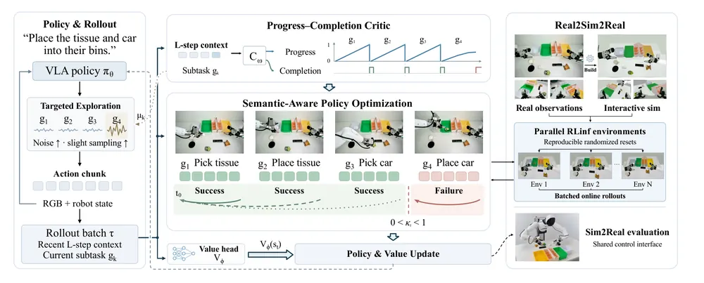
무슨 문제인가
긴 조작 과제를 RL로 학습할 때 보통 마지막 성공 여부만 reward로 줌. 이때 PPO가 쓰는 GAE(generalized advantage estimation: 한 스텝 가치 오차인 TD residual을 시간 역순으로 누적해 advantage를 구하는 방식)는 끝부분 실패의 오차를 궤적 처음까지 거꾸로 전달함. 그래서 앞의 하위 과제 k개를 잘 해내고 k+1번째에서 실패한 궤적이면, 잘한 행동의 advantage도 같이 낮아짐. 중간 reward를 촘촘히 주는 기존 방법은 이 전파를 그대로 두고, 학습 후반 실패가 일부 하위 과제에 몰려도 과제를 고르게 뽑아 이미 익힌 하위 과제에 상호작용을 낭비함.
어떻게 푸나
AtomicRL은 SFT로 학습한 VLA를 PPO 기반으로 추가 학습하는 RL post-training 방법이고, 긴 지시를 차례가 정해진 하위 과제(atomic subtask)로 나눠 다룸. 먼저 PCC(Progress-Completion Critic)가 최근 L스텝의 관측·행동과 현재 하위 과제를 받아 진행도와 완료 여부를 내며, VLM과 사람이 단 demonstration 주석으로 오프라인 학습한 뒤 RL 중에는 고정함. SAPO(Semantic-Aware Policy Optimization)는 PCC가 찾은 하위 과제 경계에서 GAE 누적에 계수 κ를 곱해, 다음 하위 과제가 실패했으면 κ를 1보다 작게 해 앞쪽 성공 구간으로 넘어가는 실패 신호를 약하게 만듦(성공이면 κ=1). BATE(Bottleneck-Adaptive Target Exploration)는 하위 과제별 완료율 이동 평균이 낮은 하위 과제를 포함한 과제를 더 자주 뽑고, 그 구간에서 entropy 정규화를 키움. 실로봇용으로는 실제 demonstration 1개와 물체 다시점 사진으로 MuJoCo 시뮬레이션 환경을 자동 재구성하는 Real2Sim2Real pipeline을 만들고, 시뮬레이션에서 학습한 policy를 실로봇에 그대로 배치함.
결과
- LIBERO-LONG(시뮬레이션 장기 조작 과제 10개) 요소 분석에서 일부러 약한 SFT policy로 시작함. 성공/실패 0/1 reward만 쓸 때 성공률이 PPO 78.2%에서 SAPO 87.8%로 오름. 하위 과제 reward나 진행도 reward를 줘도 PPO는 80.2%와 81.8%, SAPO는 89.4%와 89.0%임. 여기에 진행도 reward 가중치를 학습 중 선형으로 줄이는 설정과 BATE를 더하면 91.2%가 됨.
- CALVIN ABC-D(환경 A, B, C에서 학습하고 처음 보는 환경 D에서 하위 과제 5개를 연달아 수행)에서 π0.5로 1,000회 평가함. 5개를 모두 끝낸 비율이 PPO 70.6%에서 80.1%로 오름. 평균 연속 완료 개수는 4.36에서 4.56으로 오름.
- LIBERO-LONG 본 실험에서 성공률이 base VLA가 π0.5일 때 PPO 95.4%에서 AtomicRL 99.0%로, OpenVLA-OFT일 때 94.8%에서 98.8%로 오름. PPO가 이미 높아 차이는 4퍼센트포인트 안팎임.
- AgiBot G1 실로봇의 탁상 과제 3개(하위 과제 4~6개)를 과제·방법마다 25회 평가함. 평균 성공률이 SFT 48.0%, PPO 61.3%, AtomicRL 69.3%임. 9개 조합의 시뮬레이션 성공률과 실로봇 성공률의 Pearson 상관계수는 0.909임.
한계
하위 과제를 나눠 쓴 STARE-VLA, IG-RFT 같은 방법과 직접 비교한 실험이 없고, baseline은 PPO뿐임. SAPO 기여를 보인 요소 분석은 약한 초기 policy를 쓴 LIBERO-LONG 한 설정에서만 했고, BATE의 과제 샘플링과 entropy 조절 효과는 따로 나누지 않음. PCC를 위해 과제마다 주석 달린 궤적이 필요하고(LIBERO 150개, 실로봇 과제당 50개), 실로봇 실험은 탁상 과제 3개이며 코드 공개 여부는 본문에서 확인 불가함.
누리랩 연구와의 연결
- 하위 과제 경계와 성공·실패를 판정하는 PCC는 하위 과제 단위 failure detection 모듈로 볼 수 있음. 실패 판정을 탐지에서 끝내지 않고 RL의 credit 전파를 조절하는 데 쓴 사례로, failure detection을 VLA 학습에 연결하는 연구의 비교 대상임.
- skill chaining과 long-horizon 조작에서 앞 단계 성공을 보존하며 병목 단계에 탐색을 모으는 방식이라, 하위 과제 구조를 쓰는 VLA RL fine-tuning 실험의 baseline으로 쓸 수 있음.
11
70점
From VLM Planners to Robotic Agents: Self-Evolving Harnesses for History-Dependent Manipulation
Embodied AI
relevance 10/10
ICLR 양식 (추정)
Robotics (cs.RO)
VLM planner를 고정 VLA 위에 두고, 과제 진행 상황을 기록하는 편집 가능한 harness와 rollout 실패에서 그 harness를 스스로 고치는 절차를 붙임. RoboMME 16개 과제 평균 성공률이 self-evolution 없이 44.38%, 있을 때 51.38%임.
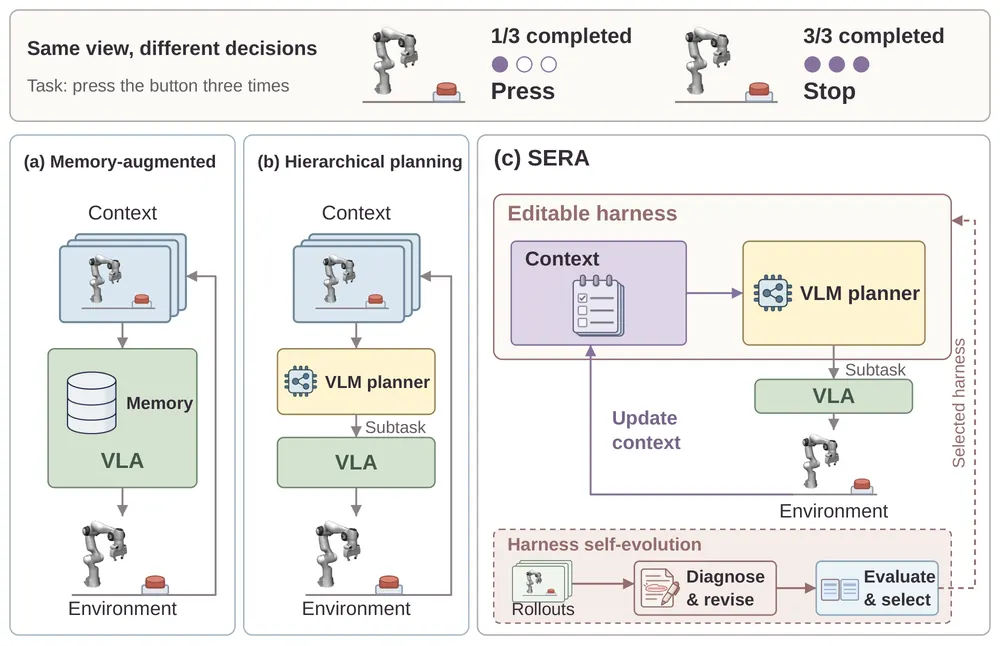
무슨 문제인가
버튼을 세 번 누르는 과제처럼, 같은 장면이라도 지금까지 몇 번 성공했는지에 따라 맞는 행동이 달라지는 경우가 있음. 현재 관측만 보는 VLA는 이런 과제를 풀 수 없고, 기억을 붙인 VLA나 VLM planner를 둔 계층 구조도 명령을 내린 뒤 실제로 성공했는지를 따로 확인하지 않음. 또 planner가 같은 실수를 반복할 때 이를 고치려면 보통 demonstration을 더 모아 VLM을 fine-tuning해야 함.
어떻게 푸나
SERA(Self-Evolving Robotic Agent)는 상위 VLM(gpt-5.6-sol)을 harness(입력 구성, 과제 상태 기록, 명령 검사, 실패 시 제어 규칙을 묶은 바깥 틀)로 감싸고, 하위 VLA는 고정한 채 실행만 맡김. 매 round마다 VLM은 지시문에서 뽑은 고정 guidance, 최근 front·wrist 영상, 텍스트 task context, 직전 명령, 실행 가능한 명령 후보를 받음. VLM은 직전 명령이 성공했는지 판단해 task context를 고쳐 쓰고 다음 하위 명령을 한 번에 냄. task context는 진행 단계, 완료한 일, 잡은 물체 등을 1,600자 이내로 요약한 것이라 영상이 창에서 빠진 뒤에도 과거 정보를 남김. 개발 단계에서는 분석 agent가 실패 rollout에서 처음 어긋난 지점을 찾고, 수정 agent가 planning guidance·판정 기준·제어 규칙 수정안을 냄. verifier가 같은 episode에서 기존 harness와 수정안을 다시 돌려 비교하고, 고른 harness는 test 전에 고정함.
결과
- RoboMME(과거 관측을 기억해야 풀리는 시뮬레이션 조작 과제 16개, 과제당 50 episode)에서 16개 과제 평균 성공률이 self-evolution 없는 harness의 44.38%에서 51.38%로 오름. 오름폭은 Counting suite(34%에서 49%)와 Imitation suite(18.5%에서 30%)에 몰려 있고, Reference suite는 69%에서 69.5%로 거의 같음.
- 공개 leaderboard 수치와 비교하면 평균 성공률이 MemER(VLM이 과거 keyframe을 골라 subtask를 내는 계층 구조) 42.38%, FrameSamp+Modul 44.51%보다 높음. FrameSamp+Modul은 과거 frame의 시각 feature로 action expert를 조절하는 방법임. Reference suite는 69.5%로 MemER 38.00%보다 높지만, Counting(49.00% 대 65.22%)과 Imitation(30.00% 대 51.39%)은 FrameSamp+Modul보다 낮음.
- 저자가 직접 재현한 MemER와 과제별로 비교하면 전체 성공 episode는 MemER 363/800, SERA 411/800임. MemER에서 SERA로 가며 VideoPlaceOrder는 18에서 46으로 오르지만 ButtonUnmask는 41에서 20, ButtonUnmaskSwap은 12에서 0으로 내림.
- PatternLock 개발용 6개 episode에서 초기 harness는 2개 성공함. 방향 해석을 고친 뒤 3개, 빠진 방향 명령을 추가해 후보를 5개에서 8개로 늘린 뒤 5개 성공함. 이 값은 test 전 개발 단계 결과임.
한계
실험은 RoboMME 시뮬레이션뿐이고 실로봇 실험은 없으며, 본문에 코드 공개 주소가 없음. leaderboard baseline과의 비교는 같은 조건에서 돌린 대조 실험이 아니고, 어떤 수정이 오름폭을 만들었는지 가르는 ablation도 없음. 상위 planner가 비공개 대형 VLM이고 매 round 호출하므로 지연이 클 수 있지만, 본문은 이 지연을 재지 않았음.
누리랩 연구와의 연결
- 실행 직후 영상으로 명령 성공 여부를 판정하고 task context를 고치는 구조라, VLA 위에서 failure detection과 recovery를 돌리는 설계의 비교 대상이 됨.
- 가중치 대신 planner의 prompt·판정 기준·제어 규칙을 rollout 실패로 고치는 방식은 language feedback 기반 learning과 텍스트 형태 robot memory 연구에 바로 이어짐.
12
70점
Think-Capture: Active 3D Geometry Acquisition for Spatial Reasoning in Vision-Language Models
Embodied AI
relevance 7/10
WACV 2027 채택
Computer Vision and Pattern Recognition (cs.CV)
VLM이 질문에 필요한 물체만 골라 그 3D 위치와 카메라 자세를 도구로 재고, 그 결과를 짧은 텍스트로 받아 답하게 함. 4B 모델의 MindCube-Tiny 정확도가 32.9%에서 54.4%로 오름.
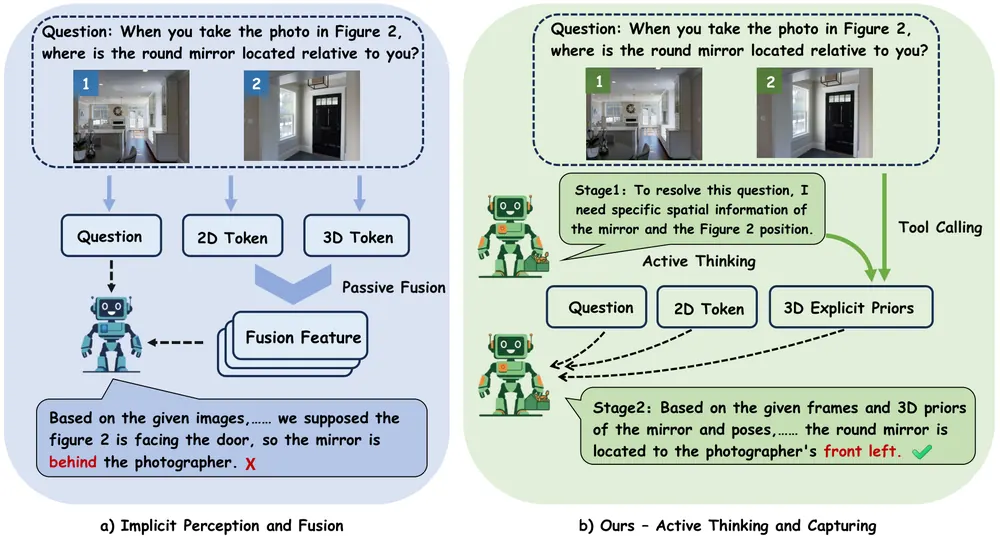
무슨 문제인가
VLM은 2D 인식은 잘하지만 여러 시점의 사진 사이에서 물체의 3D 관계를 일관되게 유지하지 못함. 가려짐이나 시점 변화가 있으면 사진 속 배경을 관찰자 뒤쪽으로 착각하는 식으로 틀림. 기존 방법은 장면 전체의 dense geometry를 모든 질문에 미리 섞어 넣으므로 계산과 context가 늘어남. 3D 도구를 부르는 agent 방식도 도구 출력이 틀리면 그 오류가 답으로 그대로 이어짐.
어떻게 푸나
Think-Capture는 두 단계로 답함. Stage 1에서 VLM은 질문과 사진 최대 4장을 보고 3D 측정이 필요한 물체 이름만 출력함. 도구 묶음은 SAM3로 그 물체의 mask를 따고, Pi3X(여러 사진에서 point map과 카메라 자세를 추정하는 3D 복원 모델)로 사진마다 point map과 카메라 자세를 추정해 첫 사진 기준 좌표계로 옮김. Symbolic 3D State Abstraction(정해진 문장 틀)이 이를 물체의 위치·크기·쌍별 방향과 거리, 카메라의 위치와 회전을 적은 평균 100 token 텍스트로 바꿈. Stage 2에서 VLM은 원래 사진과 이 텍스트를 함께 보고 답함. Qwen3-VL-4B를 GRPO(정답 보상을 표본 묶음 안에서 정규화하는 RL)로 학습하며, 도구가 오답을 바로잡은 학습 표본 1,927개에는 정답 보상 1, 도구 때문에 오답이 된 표본 1,105개에는 정답 보상 2를 줌.
결과
- MindCube-Tiny(여러 시점 사진을 보고 회전·주변 배치·관점 전환을 묻는 문제 1,050개)에서 정확도가 Qwen3-VL-4B의 32.9%에서 54.4%로 오름. 같은 크기의 3D 도구 사용 방법 Think3D-4B는 38.2%임.
- 같은 물체 선택과 mask를 쓰고 Stage 2 입력만 2D box로 바꾸면 MindCube 36.9%, 전체 MMSI-Bench(서로 다른 사진에 나온 물체 사이 관계를 묻는 benchmark) 31.8%임. 3D 텍스트는 각각 54.4%, 38.9%임.
- Pi3X 좌표에 0.4m Gaussian noise를 넣으면 MindCube-Tiny 정확도가 학습 없이 도구만 쓴 경우 26.7%, 보상 차등 없이 학습한 경우 40.3%, 전체 방법 46.2%임.
- 학습에 쓰지 않은 ViewSpatial-Bench(자기 시점과 타인 시점 전환 문제)에서 37.6%에서 42.8%로 오름. 실로봇은 Agibot G1에서 약 상자를 집는 시연만 보였고 성공률 수치는 본문에서 확인 불가임.
한계
물체가 모든 시점에서 가려지거나 깊이·자세 추정이 한쪽으로 치우치면 텍스트 관계 자체가 틀리며, 학습으로도 이를 복구하지 못함. 학습 데이터는 MindCube 한 곳에서만 뽑았고, 방향을 몇 개 언어 구간으로 나누므로 세밀한 조작에 필요한 접촉·형상 정보는 담지 않음. 한 번 추론에 21.8초가 걸려 로봇에서는 시작 시점에 waypoint 하나를 주는 용도로만 썼음.
누리랩 연구와의 연결
- 질문에 따라 필요한 물체만 골라 3D를 재는 구조는 active perception과 object-centric 표현을 VLA 상위 planner에 붙이는 방식의 사례임. 측정 대상 선택을 다음 시점 선택(NBV)으로 넓히는 비교 실험에 쓸 수 있음.
- 도구가 답을 망친 표본에 더 큰 보상을 주는 학습은, 부정확한 world model이나 perception 출력을 언제 믿을지 판단하는 failure detection 연구에 그대로 가져올 수 있음.
13
68점
SimPT: An Automated Simulation Framework for Intervention-Based VLA Post-Training
VLA
relevance 10/10
Robotics (cs.RO)
VLA post-training에서 사람이 하던 개입(실패한 실행을 넘겨받아 고치는 일)을 시뮬레이션에서 자동으로 하는 프레임워크 SimPT를 만듦. 과제 단계를 추적하는 그래프로 복구 시도 횟수를 75.0% 줄였고, 이 틀에서 다듬은 RECAP 변형은 실로봇 랜선 꽂기 성공률을 72%에서 96%로 올림.
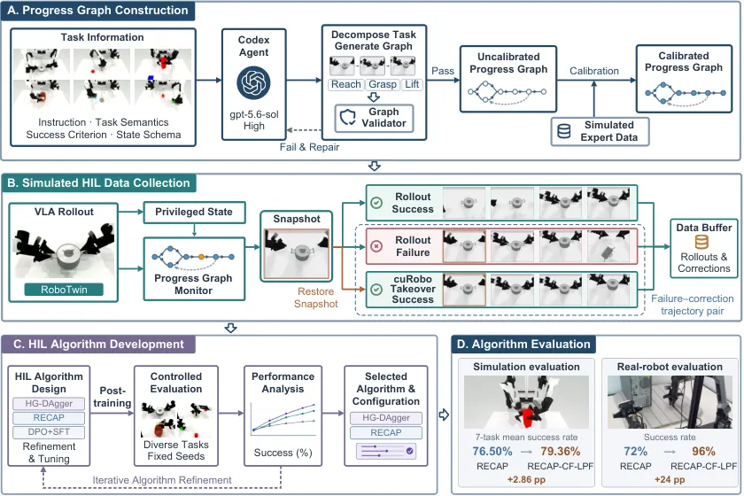
무슨 문제인가
사람이 개입해 고친 데이터로 VLA를 post-training하는 HIL(human-in-the-loop) 방식은 알고리즘 하나를 시험할 때마다 사람의 교정과 실로봇 평가를 반복해야 함. 실제 환경은 매번 조금씩 달라서 방법끼리 같은 조건으로 비교하기도 어려움. 시뮬레이션에서 교정 데이터를 자동으로 만들려면 실패한 rollout의 어느 상태로 돌아가 전문가가 이어받을지 정해야 함. 기존 IntervenGen은 이 결정을 사람에게 맡겼고, VLM으로 진행 상황을 감시하면 질의마다 추론 비용이 듦.
어떻게 푸나
SimPT는 policy rollout, 교정 데이터 수집, policy 학습, 단독 평가를 시뮬레이터 안에서 자동으로 이어 돌림. 핵심 도구인 Progress Graph는 과제를 접근, 파지, 들기 같은 단계로 나누고, 시뮬레이터만 아는 상태(물체 pose, gripper 상태, 접촉)로 단계 완료와 후퇴를 판정하는 그래프임. Codex agent(GPT-5.6-Sol 기반)가 RoboTwin 과제 코드를 읽고 이 그래프를 만들며, 판정 임계값은 시뮬레이션 전문가 궤적으로 보정함. VLA 실행 중에는 agent를 다시 부르지 않고 그래프 검사만으로 단계마다 가장 최근 snapshot을 남김. rollout이 실패하면 cuRobo(GPU 병렬 motion planner) 기반 전문가가 가장 많이 진행된 단계의 snapshot부터 복원해 과제를 끝내 보고, 실패하면 그 이전 단계로 물러남. 모은 궤적은 RECAP(value function으로 구한 advantage를 policy 조건으로 줌), HG-DAgger(교정 구간으로 재학습), DPO+SFT, FlowPRO(flow VLA용 DPO 변형)가 나눠 씀.
결과
- RoboTwin(양팔 로봇 시뮬레이션 조작 benchmark) 7개 과제에서 snapshot을 50 step마다 저장하는 고정 간격 baseline과 Progress Graph 방식을 비교함. 전체 복구 시도 횟수가 3,781회에서 945회로 75.0% 줄고, 복구 성공률은 93.4%에서 98.9%로 오름.
- 수집 방식이 학습에 주는 영향을 π0.5 기반 policy로 잼(과제당 held-out 200 seed). RECAP의 7개 과제 평균 성공률은 고정 간격 데이터 66.64%에서 Progress Graph 데이터 76.50%로 오름. HG-DAgger는 1.93퍼센트포인트 올랐지만 FlowPRO는 76.07%에서 71.86%로 내려감. Progress Graph 데이터에서는 HG-DAgger가 82.14%로 가장 높았고, SFT만 한 policy는 67.29%임.
- RECAP-CF-LPF는 RECAP의 value 예측을 5-fold cross-fitting(다른 fold로 학습한 모델로 예측)과 1 Hz Butterworth low-pass filter로 다듬은 변형임. held-out 1,400회 평균 성공률이 RECAP의 76.50%에서 79.36%로 오름. 향상폭의 95% 신뢰구간은 0.36~5.36퍼센트포인트이고, 7개 중 2개 과제는 내려감.
- 실로봇은 AgileX PiPER 양팔로 랜선을 집어 다른 팔에 넘기고 컴퓨터 포트에 꽂는 과제임. 사람 개입을 포함한 같은 1,672개 궤적으로 학습했을 때 25개 장면 성공률이 RECAP 72%(18/25)에서 RECAP-CF-LPF 96%(24/25)로 오름.
한계
실로봇에서는 SimPT의 자동 수집을 쓰지 않았고, 시뮬레이션에서 고른 RECAP 수정만 사람이 모은 데이터에 적용함. Progress Graph는 시뮬레이터 특권 상태와 cuRobo 전문가에 기대므로 실제 환경 데이터 수집에는 바로 쓸 수 없음. 실로봇 검증은 과제 1개 25개 장면뿐이고, cross-fitting과 low-pass filter 각각의 성공률 기여는 따로 보이지 않았으며 코드 주소도 본문에 없음.
누리랩 연구와의 연결
- 실패 rollout에서 어느 단계의 snapshot으로 돌아가 복구할지 고르는 Progress Graph는 failure detection·recovery 연구에서 시뮬레이션 교정 데이터를 자동으로 만드는 도구로 쓸 수 있음.
- 같은 seed와 데이터로 VLA post-training 방법 4개를 비교한 결과(HG-DAgger가 가장 높고, 수집 방식에 따라 FlowPRO 성능이 내려감)는 VLA RL fine-tuning 실험의 baseline을 고를 때 근거가 됨.
14
68점
How Representational Priors Shape Generalization in World Action Models
World Model
relevance 9/10
ICLR 양식 (추정)
Robotics (cs.RO)
world action model의 backbone이 policy 학습 전부터 겉모습 변화를 깨끗한 장면들의 feature 공간 바깥으로 보내는지를 재는 지표(nuisance orthogonality)를 만듦. backbone 9개에서 이 값과 LIBERO-Plus 4개 시각 변화 평균 성공률의 결정계수 R²가 0.835임.
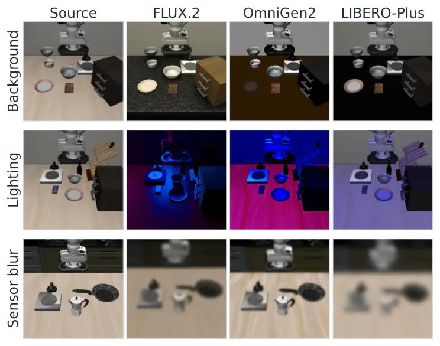
무슨 문제인가
WAM(world action model)은 영상·이미지 생성 모델을 backbone으로 삼아 미래 장면 예측과 행동 생성을 함께 학습하는 robot policy임. 같은 학습 설정이라도 어떤 생성 backbone을 쓰느냐에 따라 조명·배경·카메라가 바뀐 장면에서의 성공률이 크게 달라짐. 기존 연구는 이미지 편집 모델이 영상 예측 모델보다 낫다고 보고했지만, 무엇이 차이를 만드는지는 설명하지 못함. policy 학습 한 번에 GPU 수십 시간이 들기 때문에, 학습 전에 backbone의 쓸모를 미리 가늠할 방법이 필요함.
어떻게 푸나
먼저 LIBERO-Plus에서 시뮬레이터 상태는 같고 겉모습만 다른 관측 쌍을 모아 진단용 데이터를 만듦. 깨끗한 관측 40장을 backbone에 넣어 층별 중간 feature를 얻고, SVD로 이 feature들이 차지하는 부분공간(in-distribution 부분공간)을 구함. 이어서 겉모습을 바꾼 관측 1,200장의 feature가 원래 feature에서 얼마나 옮겨 갔는지 변위 벡터를 계산함. nuisance orthogonality는 이 변위 중 부분공간 바깥으로 향하는 비율을 층과 샘플에 대해 평균한 값임. 값이 높으면 행동과 무관한 변화가 깨끗한 장면끼리 구분하는 방향과 섞이지 않는다는 뜻임. policy 학습 뒤에는 nuisance suppression을 잼: 깨끗한 feature의 분산으로 정규화한 변위가 학습 전 world model 대비 얼마나 줄었는지를 부분공간 안쪽과 바깥쪽으로 나눠 비율로 나타냄.
결과
- LIBERO-Plus(LIBERO 조작 과제에 조명·배경·센서 노이즈·카메라 시점 변화를 넣은 robustness 평가 모음)의 4개 변화 평균에서, FLUX.2 backbone은 orthogonality 0.799에 성공률 89.0%임. Wan2.2 backbone은 0.594에 46.5%임. backbone 9개, 평가 궤적 총 5,418개 기준임.
- 같은 구조를 무작위 초기화한 FLUX.2는 orthogonality 0.724, 성공률 63.9%로 두 모델 사이에 놓임. 영상 모델 MAGI-1(0.750, 76.2%)과 SANA-Video(0.742, 75.4%)도 높은 값을 보임. 저자는 이를 근거로 사전학습 목표가 이미지 편집인지 영상 생성인지보다 표현 기하가 더 관련 있다고 주장함.
- FLUX.2를 backbone으로 쓴 ImageWAM을 학습하면 깨끗한 feature의 총분산이 13.4배 커지는 동안 변위의 부분공간 안쪽 성분은 2.73배, 바깥쪽 성분은 2.48배만 커져 상대적으로 억제됨. Wan2.2를 backbone으로 쓴 FastWAM을 학습하면 총분산은 4.42배, 안쪽·바깥쪽 변위 성분은 5.63배와 3.18배로 억제가 약함. FastWAM의 카메라 변화 성공률은 16.4%임.
한계
모든 실험이 LIBERO 시뮬레이션 조작과 LIBERO-Plus의 시각 변화에 한정되고, 실로봇 실험과 언어·과제 조합 일반화는 다루지 않음. 결과는 모델 간 상관관계이며, 저자도 orthogonality가 robustness의 원인임을 따로 떼어 보이지 않았다고 밝힘. Kiwi-Edit(0.786, 77.1%)처럼 추세에서 벗어난 점이 있고, suppression 분석은 두 쌍의 단일 층에서만 보였으며 코드 공개 여부는 본문에서 확인 불가함.
누리랩 연구와의 연결
- world model이나 VLA backbone을 고를 때 policy 학습 전에 깨끗한 장면 40장과 변형 장면만으로 robustness를 가늠하는 진단 도구로 쓸 수 있음.
- 같은 변위 분해를 실패 장면에 적용하면, 실패가 겉모습 변화에서 왔는지 장면 자체의 차이에서 왔는지 가르는 failure diagnosis 지표로 확장할 여지가 있음.
15
62점
AOV-GS: Active Open-Vocabulary Semantic Mapping with 3D Gaussian Splatting
3D Vision
relevance 9/10
CoRL 양식 (추정)
Computer Vision and Pattern Recognition (cs.CV)
로봇이 처음 보는 실내를 탐색하며 3DGS 지도를 만들 때, 다음 시점을 고르는 기준에 SAM·CLIP으로 잰 의미적 새로움을 더함. Replica 8개 장면에서 텍스트 질의 분할 평균 mIoU가 기하만 보는 탐색의 33.3%에서 34.6%로 오름.
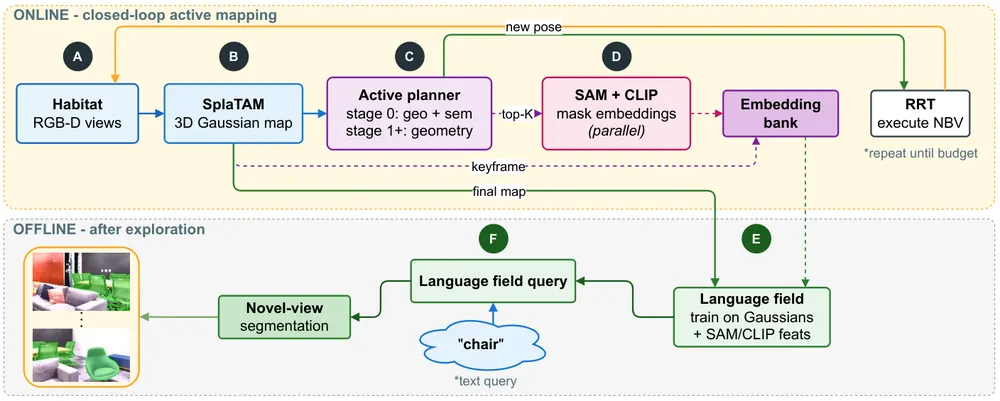
무슨 문제인가
ActiveGS 같은 기존 active mapping은 아직 안 본 영역을 많이 덮는 시점만 고름. 그래서 지도에 어떤 물체 정보가 담길지는 지나간 경로에 따라 우연히 정해짐. 의미 정보로 탐색을 이끄는 ActiveSGM은 장면마다 OneFormer 분할기를 정해진 label 집합으로 fine-tuning해야 함. 이 경우 label 집합 밖의 단어로 지도를 질의하는 open-vocabulary 사용이 막힘.
어떻게 푸나
AOV-GS(Active Open-Vocabulary Gaussian Splatting)는 SplaTAM(RGB-D SLAM 방법)으로 3DGS 지도를 만들고 ActiveGS의 planner로 다음 시점(NBV, next-best-view)을 고름. 탐색 초반(stage 0)에는 후보 시점마다 아직 안 본 픽셀 수와 이동 거리로 기하 점수를 매겨 상위 8개를 남기고, 남은 후보마다 현재 지도에서 RGB 영상을 렌더링하고, SAM으로 물체 mask를 따고 CLIP으로 mask마다 512차원 embedding을 뽑음. 이 embedding이 지금까지 지나온 keyframe의 embedding bank와 얼마나 다른지를 cosine 유사도로 재어 의미적 새로움 점수로 씀. 최종 점수는 기하 점수와 새로움 점수의 곱이고, 후반(stage 1 이후)에는 기하 점수만 씀. 탐색이 끝나면 keyframe의 CLIP embedding으로 LangSplatV2(Gaussian마다 언어 feature를 붙이는 방법) language field를 학습하며, 이 field는 텍스트 질의를 받아 새 시점 분할 mask를 냄.
결과
- Replica(실내 장면 사진 수준 재현 데이터, 8개 장면)에서 같은 SAM·CLIP 파이프라인을 쓴 기하 전용 탐색 대비 평균 mIoU가 33.3%에서 34.6%로 오름. 장면별로는 office0에서 7.1퍼센트포인트 오르고 4개 장면에서는 내림. 8개 장면을 seed 5개로 반복한 평균 PSNR은 기하 전용 31.62dB, AOV-GS 31.53dB로 비슷함.
- office0을 seed 5개로 반복하면 mIoU가 기하 전용 28.8±1.4%, AOV-GS 33.6±1.1%임.
- Matterport3D(더 넓은 실내 장면 데이터, 5개 장면)에서는 평균 mIoU가 21.3%에서 23.1%로 오름. 두 방법 모두 CorrCLIP 방식 후처리(mask 병합과 클래스 간 억제)를 쓰면 21.8% 대 24.0%임.
- ActiveSGM이 OneFormer용으로 고른 경로를 그대로 재생해 같은 language field를 학습하면 Replica 평균 mIoU가 28.2%에 그침. 저자는 탐색 기준이 지도의 의미 표현과 맞아야 한다는 근거로 이 결과를 듦.
한계
모든 실험이 Habitat 시뮬레이터에서 정답 카메라 pose를 받아 진행되었고 실로봇이나 SLAM 오차 조건은 없음. 평균 향상폭이 1~2퍼센트포인트이고 Replica 8개 중 4개 장면에서는 오히려 내리며, seed 반복은 office0 한 장면의 mIoU만 보고함. 후보 하나를 의미 점수로 매기는 데 약 8초가 걸려 office0 한 번 탐색에 약 61분이 듦.
누리랩 연구와의 연결
- active perception/NBV와 open-vocabulary semantic mapping을 3DGS 위에서 묶은 사례임. 기하 점수 위에 foundation model 점수를 곱해 시점을 다시 고르는 구조는 과제 조건이 붙은 NBV 연구의 비교 대상으로 쓸 수 있음.
- OneFormer용 경로가 CLIP language field에는 도움이 안 된다는 결과는, object-centric 3DGS 지도를 만들 때 탐색 기준을 하위 표현에 맞춰 설계해야 한다는 근거가 됨.
오늘의 흐름
- VLA 실행 중 기억을 따로 두기: 지나간 관측을 VLA 안에 그대로 쌓지 않고, 3D 기하 token이나 문장 목록처럼 꺼내 쓰기 쉬운 형태로 바꿔 저장하는 논문이 셋 나옴. 셋 모두 기억 장치를 뺀 비교 조건보다 평균 성공률이 오름. GeoMem-VLA, Plan First, Act Later, Self-Evolving Harnesses
- 실패와 사람 개입을 post-training에 쓰기: 배포나 시뮬레이션에서 나온 실패를 VLA post-training에 쓰는 방법이 여럿 나옴. 사람 개입 데이터를 그대로 쓰는 쪽, 시뮬레이터가 개입을 대신하는 쪽, 하위 과제 경계에서 실패 신호의 전파를 줄이는 쪽으로 나뉨. Training in Deployment, SimPT, AtomicRL
- world model의 접촉 예측과 시각 표현 평가: world action model(영상과 action을 함께 예측하는 world model)이 접촉력까지 예측하게 한 연구가 나옴. 시각 encoder가 일반화에 유리한지 policy 학습 전에 재는 연구와, world model과 policy가 함께 쓸 encoder를 따로 학습하는 연구도 나옴. CW-WAM, Representational Priors, ALPS
- 느린 시각 판단과 빠른 센서 보정 나누기: 느린 시각 모델 추론 사이를 촉각이나 힘 feedback으로 메우는 구조가 두 편 나옴. T-WLA는 action chunk를 촉각으로 실행 도중에 고쳐 실제 dexterous hand 과제 4개 평균 성공률을 23.0%에서 51.0%로 올림. T-WLA, CW-WAM
- 사람 영상과 3D 측정으로 공간 정보 보강: RGB 사람 영상에서 3D 형상을 복원해 policy를 사전학습하거나 시뮬레이션 demonstration을 늘리는 방식이 나옴. VLM이나 탐색 로봇이 필요한 물체와 시점만 골라 3D를 재는 방식도 나옴. SpatialDex, Real2Sem2Real, Think-Capture, AOV-GS
해볼 만한 연구
예측 접촉력과 측정 접촉력의 차이로 실패 감지하기
- 질문: world action model이 예측한 wrench(힘과 토크를 묶은 값)와 실제로 잰 wrench의 차이가 끼임·미끄러짐 같은 접촉 실패를 시각 신호보다 먼저 알려 주는지 밝힘.
- 첫 실험: peg 끼우기와 서랍 열기에서 wrench 예측 오차 기반 감지기와 VLM 영상 판정 기반 감지기의 감지 시점과 정확도를 비교함.
- 가장 가까운 연구: CW-WAM은 예측 wrench를 action 생성과 힘 제어에만 쓰고, 실패 감지 신호로는 평가하지 않음.
자동 실패 감지기로 사람 개입 대체하기
- 질문: 배포 중 online post-training에서 사람 개입을 자동 실패 감지와 자동 복구 동작으로 바꿔도 성능 향상이 유지되는지 밝힘.
- 첫 실험: 같은 양팔 과제에서 세 조건을 같은 학습 횟수로 비교함: 사람 VR 개입, 과제 단계를 추적하는 그래프로 실패를 판정한 뒤 자동 복구, 개입 없음.
- 가장 가까운 연구: Training in Deployment는 사람 개입에 기댐. SimPT는 시뮬레이터만 아는 물체 pose·접촉 상태가 있어야 단계를 판정함.
문장 memory와 3D token memory 비교
- 질문: 기억이 필요한 조작 과제에서 사건을 문장으로 적는 memory와 3D 기하를 token으로 저장하는 memory가 각각 어떤 과제에서 유리한지 밝힘.
- 첫 실험: RoboMME(기억이 필요한 조작 과제 모음)에서 같은 VLA에 문장 memory, 3D token memory, 둘을 함께 쓰는 경우를 붙여 과제 유형별 성공률을 비교함.
- 가장 가까운 연구: Plan First, Act Later와 Self-Evolving Harnesses는 텍스트 기록만, GeoMem-VLA는 3D token memory만 다룸.
꼭 읽을 논문
- SpatialDex: RGB 사람 영상에서 3D 형상을 복원해 양손 policy를 사전학습함. 실로봇 양손 과제 6개 성공률이 π0.5의 43.3%에서 81.7%로 오름.
- T-WLA: 시각 action chunk를 촉각으로 실행 도중 고치는 구조로, 실행 중 보정 설계의 비교 대상이 됨.
- Plan First, Act Later: 할 일을 미리 목록에 적어 두는 robot memory 구조로, 기억이 필요한 조작 과제 성공률을 올림.
- CW-WAM: world model이 접촉력까지 예측하게 한 사례로, 예측 접촉력을 실패 감지 신호로 시험해 볼 출발점이 됨.
- SimPT: VLA post-training의 개입과 복구를 시뮬레이션에서 자동화하고, post-training 방법 4개를 같은 조건에서 비교함.